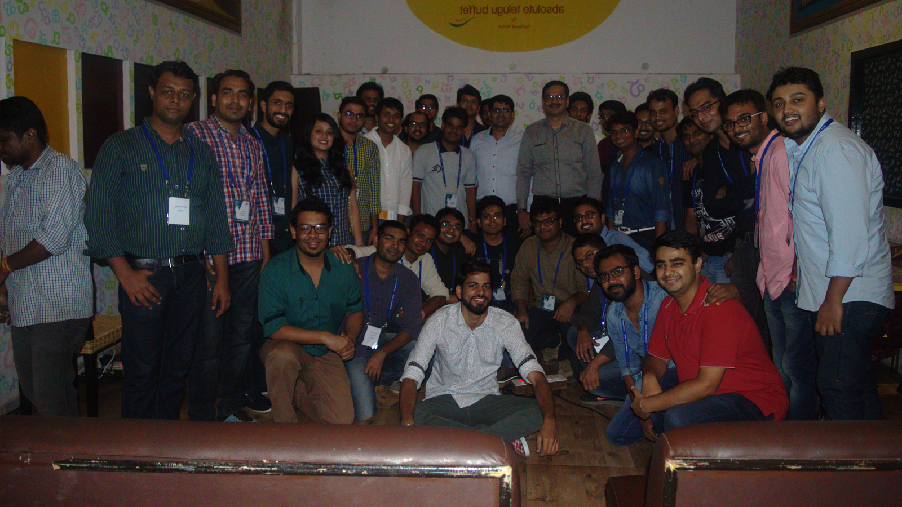
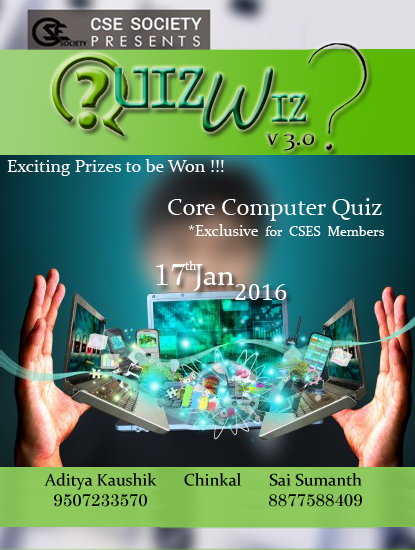
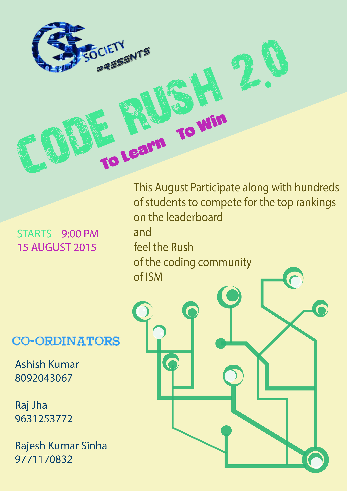
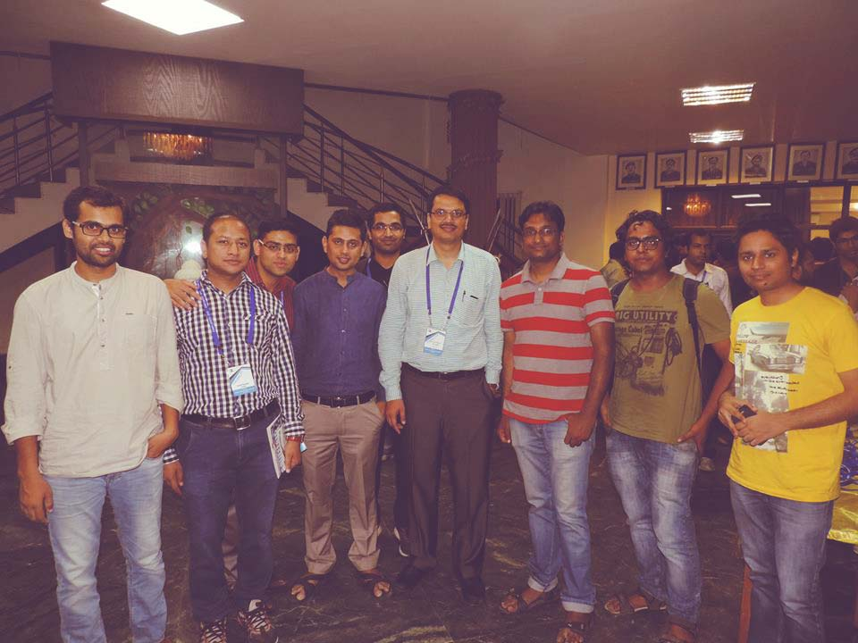
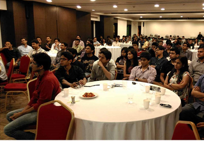

2016
- Confluence 2016
- Code Marathon 2.0
- Quiz Wiz 3.0
- Code Rush 2.0
Confluence 2016

Alumni contribution is essential for the growth of the department. Ranging from parameters like placement and internships to the counselling of young technocrats in preparing for and pursuing an apt career, alumni have been a great help since time immemorial.The CSE society aims to fortify the alumni-students relationship and acknowledges their valuable contribution to the department and the institute.
Confluence – 2016, the Annual CSE Alumni meet was organized by the Computer Science and Engineering Society (CSES) of the Department of Computer Science & Engineering, ISM Dhanbad on 11 June 2016 at 7 Biryani’s Hotel, Bengaluru.
On behalf of the department, Dr. Chiranjeev Kumar (President of CSES & Head of CSE Department), Dr. Amgoth Tarachand (Faculty In-Charge of CSES & Assistant Professor of CSE Department) and about 35 undergraduate students of the department made their presence during the event.
One of the major objectives of the program was to strengthen the Alumni base of the Department and bring them under the umbrella of CSES, as the society firmly believes that the Alumni pay a significant contribution to the Department to fulfill its goals.
Code Marathon 2.0 Sponsored By:
B.Tech Class of 2007

The Computer Science and Engineering Society & CodeISM in association with B.Tech Class of 2007 bring you the biggest coding extravaganza of ISM, Code Marathon 2.0 starting from March 9, 2016.
Each of the contest is a standard type short contest of duration 3 hours to solve required problems. The rules are same as followed in ACM ICPC contests. To provide fair competition the contest is divided into 3 divisions.
The first division is for the 3rd year / final year UG students/ PG students as well as for CSE alumni.
The second and third divisions are for 2nd and 1st year students respectively.
Goodies will be given to the Top 10 students of each division based on the cumulative rankings.
- The contest consists of 4 contests of duration 3 hours.
- Participation in all 4 contests is a must to grab prizes worth. By participation we mean atleast a single submission in each day of the contest.
- . The contest ranking will be based on ACM ICPC ranking system and no partial points will be provided for partially correct answer.
- Unlike Code Marathon 1.0 , this time it will be open for CSE Alumni as well.
- . Prize Distribution is as follows :
- Div 1 (3,4, PG):
I - 7500
II - 4500
III - 3000
IV & V - 1500
- Div 2 (2):
I - 5000
II - 3500
III - 2500
IV & V - 1000
- Div 3 (I yr):
I - 3000
II - 1500
III - 1000
IV & V - 500
- Div 1 (3,4, PG):
- T-shirts for top 10 in each Div.
- Only Students from Computer Science and Engineering, ISM Dhanbad , whether past/present , are eligible for prizes.
Quiz Wiz 3.0
Computer Science and Engineering Society conducted its quizzing event Quiz-Wiz3.0 for the tech savvy, and the event got better with time.
The prelims were exclusive to the first years consisting of 26 questions based on general technical knowledge from which top 4 students were selected for second round. Top three winners of the small quiz event conducted on social media were directly selected for the second round.
To improve the interaction among the students, it was mandatory for all teams in second round to have four members – one from each year. The second round consisted of 15 questions and top 5 teams were selected for mains round. The Mains round was further sub-divided into five sections, namely “Video Quiz Round”, “Who am I?”, “Name the company”, “Connect the Dots”, and a “General Round” where each round consisted of 10 questions.
The quiz was conducted by Aditya Kaushik, Soham Satyadharma, Dev Kothari,Sai Sumanth,Pranav Thombre, Yash Goel and Chinkal.
The Quiz ended with a fair share of excitement and a healthy competition. The teams displayed commendable competitive spirit, team-work and knowledge. It was a welcome distraction from the curriculum and certainly a learning experience.
| Team name | Members | Final Score |
| Gangs of Wassepur | 1. Nitin 2. Aditya Rajesh Badole 3. Aman Ranjan Thakur 4. Abhinav Goyal | 135 |
| Misfits | 1. Anupam Wadhwa 2. Rishabh Thukral 3. Bhavisya Mathur 4. Ashish Mohan Verma | 90 |
| Knighthood | 1. Aarush Juneja 2. Aadil Ahmed 3. Kirti Singh 4. Mohit Chawla | 80 |
Code Rush
Coding and problem solving constitute the core of the Computer Science and Engineering industry.
Keeping this in mind, the CSE Society organised the second edition of Code Rush on August 14th,2015. Code Rush 2.0 was jointly organised by Rajesh Kumar Sinha, Raj Jha and Ashish Kumar from B.Tech Pre-Final Year.
Ther students were divided into three divisions: Division 1 for B.Tech Final Year, B.Tech prefinal Year, M.Techh and Reaearch Scholars, Division 2 for B.Tech 2nd Year and Division 3 for B.Tech 1st Year.
A total of 225 students participated across all divisions inn which Vamsi Krishna, Dev Kothari and Harmandeep Singh Kahlon emerged as winners. The winners were felicitated with a prize money of INR 2000.
2015
- Confluence 2015
- Code Marathon 1.0
- Quiz Wiz 2.0
- Code Rush 1.0
Confluence 2015

An Interaction Programme (Confluence – 2015) with the Alumni of CSE, ISM Dhanbad, was organized by the Computer Science and Engineering Society (CSES) of the Department of the Computer Science & Engineering, ISM Dhanbad on 13 June 2015 at Officer’s Mess, Chief Engineer (Air Force), Palam, New Delhi. On behalf the department, Dr. Chiranjeev Kumar (Associate Professor & Head of the Department), Dr. Arup Kumar Pal (Assistant Professor) and 04 current students of B.Tech (CSE) have participated in this programme. One of the objectives of the program was to strengthen the Alumni base of the Department and bring them under the umbrella of CSE Society (CSES). The society firmly believes that the Alumni can contribute to the Department significantly to fulfill its ambitions.
Code Marathon 1.0 Sponsored By:
B.Tech Class of 2006 and Incresol

CodeMarathon was a competitive programming contest organised by the Computer Science and Engineering Society of Indian School of Mines, Dhanbad and CodeISM (the coding club of Department of Computer Science and Engineeing). The event was sponsored by Class of 2k6 of the department and Incresol with prizes worth more than Rs 75,000.
CodeMarathon consisted of a series of coding contests of duration 2.5 hours. The rules are same as followed in ACM ICPC contests. To provide fair competition the contest had been divided into 3 divisions: first division was for the 3rd year & final year UG students as well as for PG students. The second and third divisions were for 2nd and 1st year students respectively.
A cumulative ranking was calculated for each division based on the performance in each of the contests. Prizes and Goodies will be given to the Top 20 students of each division based on the cumulative rankings.
Results
| Rank | DIV I | DIV II | DIV III |
| 1. | Majeed Siddiqui | Vamsi Krishna | Aditya Kaushik |
| 2. | Naman Taneja | Srinivas Devaki | Digvijay Singh |
| 3. | Prayank Mathur | Rajesh Kumar Sinha | Ankit Kumar |
Quiz Wiz 2.0

The Computer Science and Engineering Society (CSES) organized a technical quiz – QUIZ Wiz v2.0 on the 13th of September, 2014. The Quiz was organized to test the general technical knowledge of the students and as a means to encourage students of different years to interact with each other.
The preliminary round was followed by mains having 5 rounds. Round 1 consisted of 15 questions & then next 4 rounds consisted of 5 questions each. The questions also included visual questions like logos, popular personalities and visual connects, among other general quiz questions. Also included in the Quiz was the ‘Simple Pounce’ rule. According to this rule any team could answer a question directed to another team if they didn’t wish to wait for the question to be passed to them in the general order. However, negative marks were awarded on incorrectly answering such a ‘pounced’ question. Any team could also bar the Quiz-master from providing any hints, by using the ‘Block’ option, even if the question was directed to another team. With a blend of interesting rules and a few tricky questions, the teams still managed to score well, with ‘The Misfits’ bagging the top position. The top three teams were as follows:
| Team name | Members | Final Score |
| The Misfits | 1. Rishabh Thukral 2. Bhavishya Mathur 3.Ashish Verma 4. Mohit Punjabi | 135 |
| Vanquishers | 1. Aditya Pandey 2. Raj Roushan 3. Abhinav Goyal 4. Ashish Bahukhandi | 90 |
| Seinstein | 1. Dev Kothari 2. Pratik Jain 3. Shubham Chauhan 4. Sourav Kothari | 80 |
Code Rush 1.0

CodeRush was organized on 2nd of November, 2014 by Computer Science & Engineering Society. Anant Kumar and Nishant Raj (B.Tech, 2016) were the event organizers. The first and second year students competed in first group and the rest of the students inlcuding third final year UG, PG students and research scholars competed in another. The contest lasted for two and a half hours. Raj and Majeed Siddiqui stood first in Group 1 and Group 2 respectively.
2014
- Confluence 2014
- Quiz Wiz 1.0
Confluence 2014

An Interaction Programme with the Alumni of CSE, ISM Dhanbad, was organized by the Computer Science and Engineering Society (CSES) of the Department of the Computer Science & Engineering, ISM Dhanbad on 14 June 2014 at Premier Inn Hotel, Bengaluru. On behalf the department, Dr. Chiranjeev Kumar (Associate Professor & Head of the Department), Mr. Tarachand Amgoth (Assistant Professor) and 42 students of VII B.Tech (CSE) who are pursuing their internship at Bengaluru have participated in this programme. One of the objectives of the program was to strengthen the Alumni base of the Department and bring them under the umbrella of CSE Society (CSES). The society also believes that the Alumni can contribute to the Department significantly to fulfill its ambitions.
Quiz Wiz 1.0
The Computer Science and Engineering Society (CSES) organized the first edition of its technical quiz, Quiz-Wiz on 4th April, 2014. The Quiz was organized to test the general technical knowledge of the students and as a means to encourage students of different years to interact with each other. Keeping this in mind, it was mandatory for all teams to have four members – one from each year.
The winners were:
- 1. Team Do Not Panic
Rajat Gupta
Abhinav Goyal
Yogendra Singh
Sakshi Gopal - 2. Team Sparsh
Sparsh Choudhary
Sajid Hussain
Saurav Kothari
Aritra Gupta - 3. The Misfits
Kriti Singh
Ashish Verma
Mohit Punjabi
Vishesh Srivastava